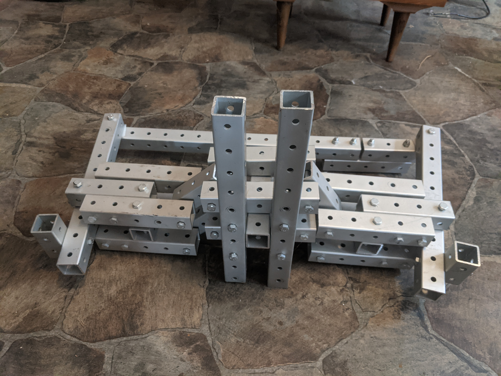
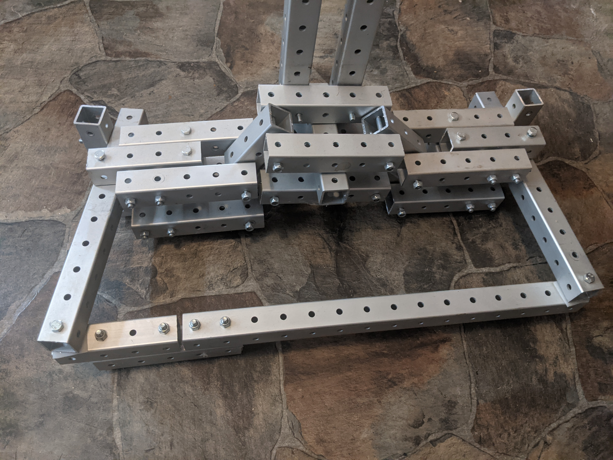
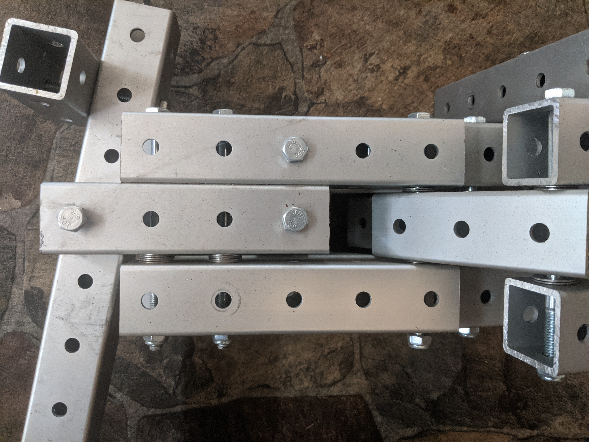
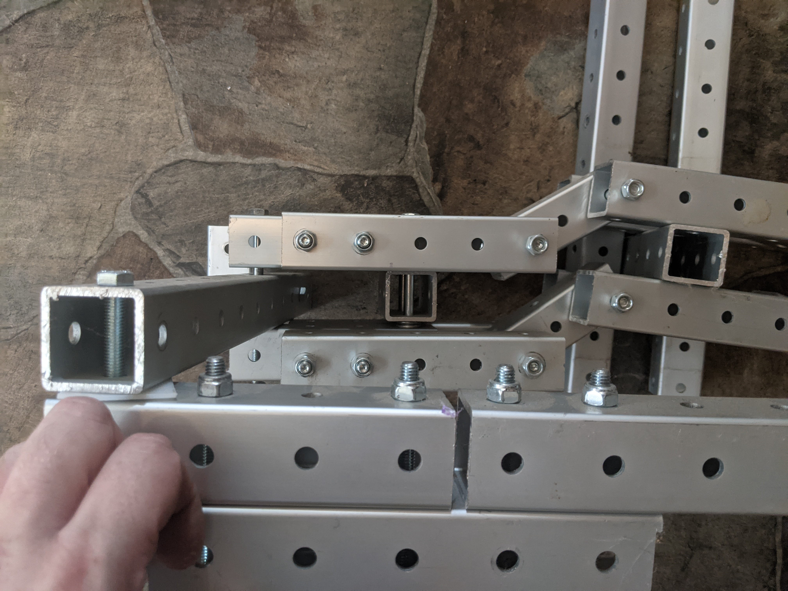
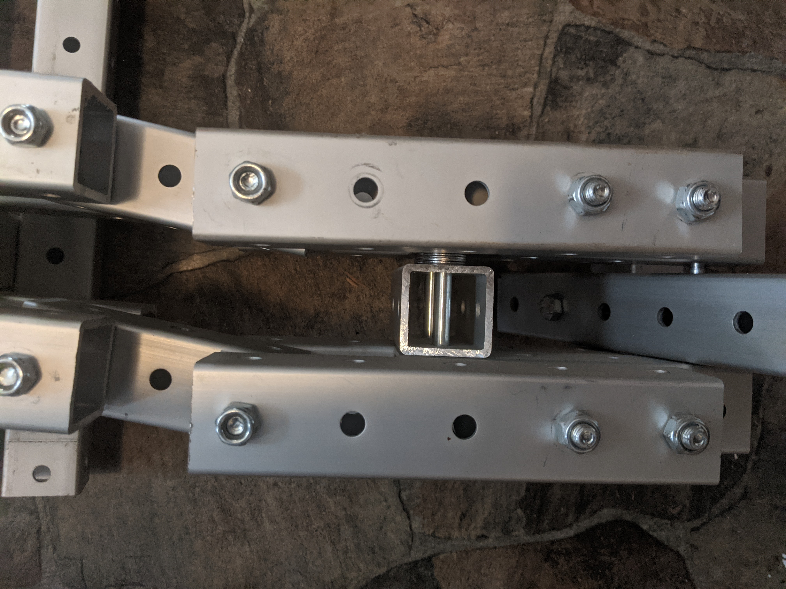

steering knuckles revision 9644
^ Techniques infobox ^^
| image | |
| designers | |
| date | |
| vitamins | |
| materials | |
| transformations | |
| lifecycles | |
| tools | |
| parts | |
| techniques | |
| files | |
| suppliers | |
| git | |
Introduction
In automotive suspension, a steering knuckle or upright is that part which contains the wheel hub or spindle, and attaches to the suspension and steering components. The terms spindle and hub are sometimes used interchangeably with steering knuckle, but refer to different parts.
Challenges
Approaches




